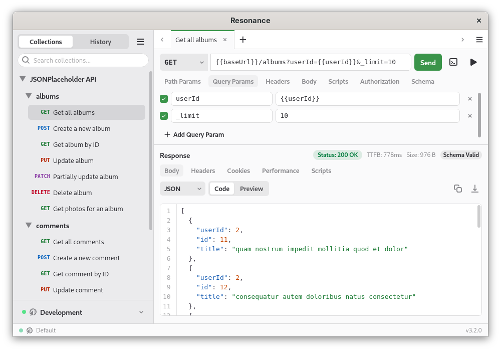
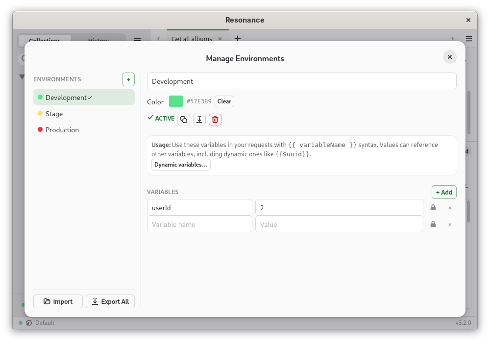
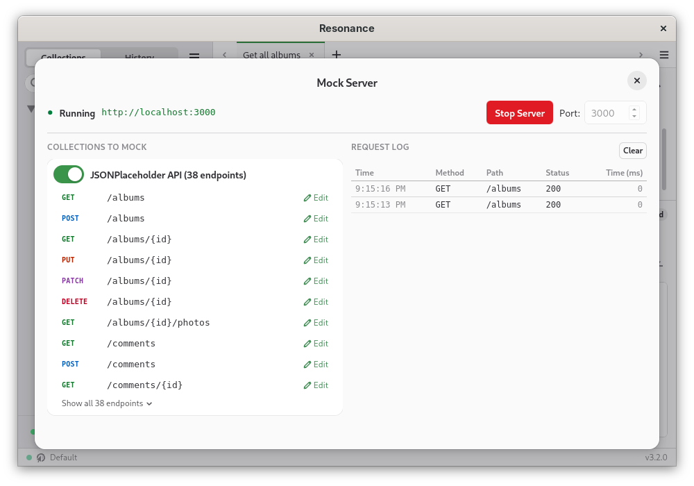
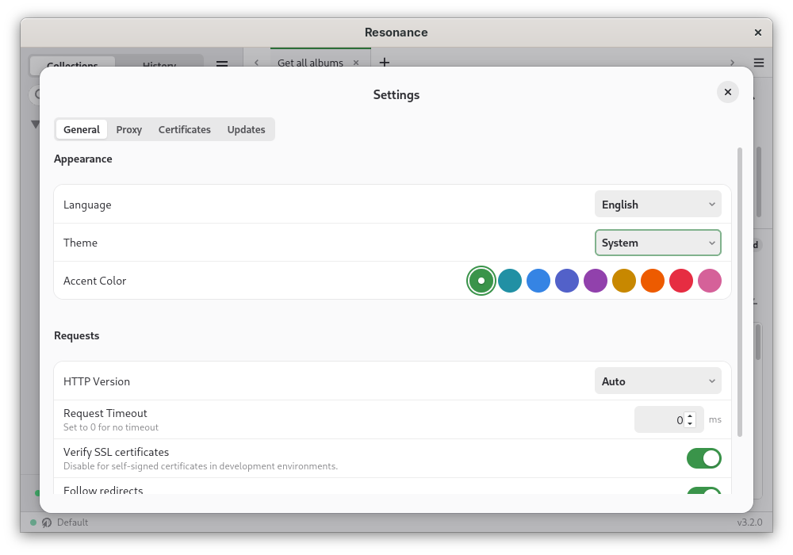

Your requests,
your machine.
A desktop API client built on Tauri. Your data stays on your machine — no cloud sync, no sign-in, no usage tracking. ~15MB to install, ~50MB RAM at runtime.
Built lean.
Works hard.
Collection Import
Drop in an OpenAPI 3.0 spec or a Postman v2.0/v2.1 collection and Resonance builds out your request tree instantly — examples included.
Scripts & Automation
Write JavaScript that runs before a request or after a response. Set variables, assert values, chain calls — all without leaving the app.
Environment Management
Group variables into named environments and switch between them in one click. Use {{ variableName }} anywhere in your request.
Authentication
Handles Bearer, Basic, API Key, OAuth 2.0, and Digest — saved per-request, stored locally, never sent to any external service.
Code Generation
Turn any request into runnable code in one click: cURL, Python, JavaScript, Node.js, Go, PHP, Ruby, or Java.
Mock Server
Spin up a local HTTP server that returns responses defined by your OpenAPI schema. No network needed — great for offline development.
Performance Metrics
See exactly where the time went: DNS lookup, TCP handshake, TLS negotiation, time-to-first-byte, and data transfer — per request.
Themes & i18n
Four built-in themes, nine accent colors. Ships with translations for English, Portuguese (BR), German, Spanish, French, and Italian.
Keyboard Shortcuts
Shortcuts for almost everything, with platform-native bindings on macOS, Linux, and Windows. Press ? anywhere to see them all.
GraphQL Support
A first-class GraphQL editor with syntax highlighting, variable support, and schema introspection — treated as a proper workflow, not an afterthought.
Workspace Tabs
Open multiple requests side by side in independent tabs. State persists across restarts — pick up exactly where you left off.
Secure Architecture
Tauri's Rust core handles all network I/O. Scripts run in a sandboxed JS runtime. Your data never leaves the process boundary.
What you'll actually see.

Main interface with request configuration

Environment management

Mock server with request logging

Settings with theme selection
Pick your platform.
Free and open-source. Runs entirely on your machine — no account, no sign-up, no strings.
AppImage or .deb package. Also on Flathub and the AUR.
Download for LinuxUniversal DMG for both Intel and Apple Silicon, or install via Homebrew.
Download for macOSNSIS installer for Windows 10 and above. No elevated permissions required.
Download for Windows$ git clone https://github.com/db-mobile/resonance.git
$ cd resonance
$ npm install
$ npm run build:tauriRequires Tauri system dependencies.